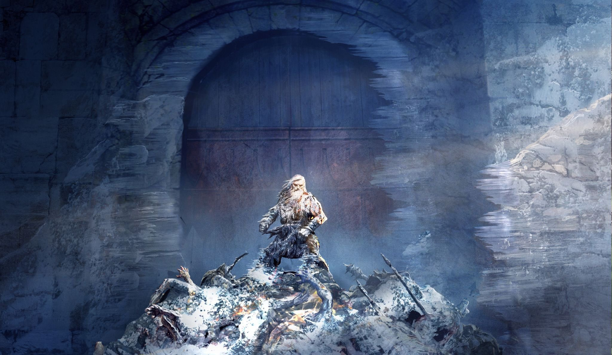

No dia 24 de agosto, um anúncio fez o coração dos fãs bater mais forte: a New Line e a Warner Bros. Animation compartilharam detalhes sobre um novo capítulo emocionante na Terra Média.
Infelizmente, a tão aguardada animação “O Senhor dos Anéis: A Guerra dos Rohirrim” teve sua data de estreia adiada para 13 de dezembro de 2024. Anteriormente, a data prevista era 12 de abril do mesmo ano, de acordo com o Deadline.
Imagem: Divulgação/Warner Bros.